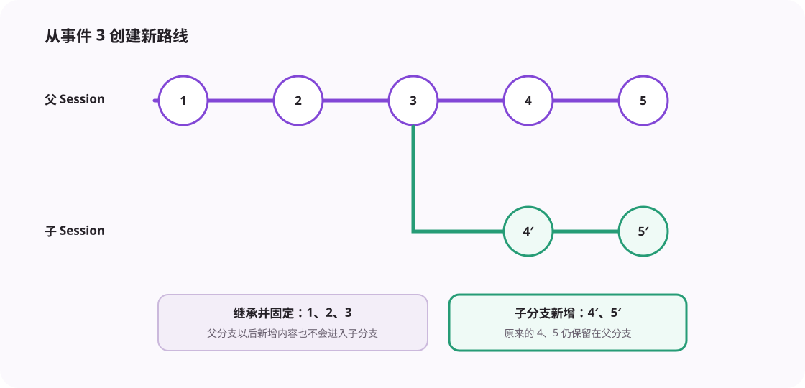

Session 保存长期任务。事件保存发生过什么。分支允许从历史位置继续，而不破坏原来的任务轨迹。
每个 Session 有自己的目录。meta.json 保存标题、工作区和分支关系；events.jsonl 按顺序追加事件；state.json 保存当前任务账本；大型工具输出和文件快照放在独立目录。
事件是一条已经发生的事实，例如“用户发送消息”“工具执行完成”“文件产生修改”“Turn 已结束”。每条事件有递增序号。应用重启后，SessionLifecycle.hydrate() 回放事件，重新建立模型消息、修改记录和检索索引，但不会重新执行历史工具。

旧实现会把父 Session 的全部事件复制到新目录。现在分支元数据记录四个值：
| 字段 | 含义 |
|---|---|
| rootSessionId | 整棵分支树最早的根 Session。 |
| parentSessionId | 当前分支直接来自哪个 Session。 |
| forkedFromSeq | 继承父分支到第几个事件。 |
| compactionFloor | 允许回退的最早位置。 |
SessionStore.readEvents() 先读取父分支，只保留分叉位置之前的事件，再拼接当前分支自己的事件。父分支后来新增的内容不会进入子分支。读取过程检测循环引用，防止错误元数据造成无限递归。
forkFrom() 从指定事件位置创建子分支。rewindSession() 也创建子分支，只是标题标记为 Rewind，因此原分支仍然存在。switchBranch() 恢复目标分支，让后续 Turn 从那条历史继续。
分叉时系统会根据分叉点之前的事件重建任务账本。分叉前产生的大型工具结果仍可读取，不需要复制文件。
上下文压缩会用摘要替代早期模型消息。最新压缩事件的位置就是回退下界。低于这个位置创建分支会缺少有效摘要，因此系统直接拒绝。原始 JSONL 仍保留用于审计，但新分支的模型视图必须从合法摘要点开始。
运行中的 Session 不能删除。存在子分支的父 Session 也不能删除，否则子分支会失去历史来源。必须先处理子分支，再删除父分支。
分支等于“父 Session + 截止位置 + 当前分支增量”，不是历史文件的完整副本。